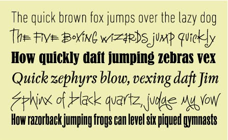
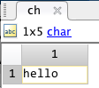
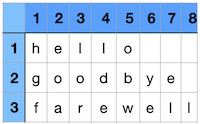

Character Arrays
for letters and stuff
Overview
They say words are little more than horizontal vectors of characters. Well, I don't know if they say that, but I say that, and you should probably know that because, from the perspective of a computer, that is basically what they are.
In this module, we will learn about character arrays, which are useful for storing information such as names or other such unique identifiers.
Syntax Overview
| Syntax | Special Character | Meaning |
|---|---|---|
| x='a' | ' ' | assign the character a to the variable x |
| x='cat' | ' ' | assign the characters 'c', 'a', and 't' to x |
Learning Objectives
- Define a Character Array.
- Be able to assign values to character arrays using paired single quotes
- Be able to use the function sprintf to format character arrays
- Be able to use functions discussed in this module like [sort] and [unique] to parse characters in a character array
- Be able to use regular expressions to find and replace characters in character arrays
Special MATLAB Characters
-
' '- paired single quotes (the straight kind) are used to concatenate characters into a character array -
[ ]- square brackets are used to concatenate character arrays
Important Terminology
-
Character Arrays: An array of characters (letters, spaces, punctuation, etc). Sometimes called a string.
-
ASCII: the American Standard Code for Information Interchange. A numeric code to indicate different characters.
Useful Mathworks Documentation
Important MATLAB Functions You should know
- char - Convert to a character array
- ischar: is the array a character array?
- upper and lower - Change case of letters
- isletter and isspace - returns a logical array that masks letters or spaces in a character array
- sprintf - Format data into character array
- regexp - Regular expression (super find function)
- regexprep - Replace text using regular expression

Assignment and syntax
Each element in a character array contains a single letter or other such character (as opposed to a numeric or logical value). When creating a character array, MATLAB assumes that you probably don't want to separate each character by a space, so the syntax for creating a character array is different from creating a numeric array. Instead of using the paired square brackets, you use a pair of single quotes (' ') and you do not include any spaces in between the characters. In fact, the space character is a type of character known as a whitespace character. For example, the following is a very simple character array:
Syntax Coloring
In the MATLAB editor, characters in character arrays are colored purple.
Anything you can type on a computer keyboard can be stored as a character array. Spaces are characters. Punctuation Marks are characters. Even numbers can be character arrays:
This can cause problems if you are not careful and accidentally try to do math with character arrays. MATLAB will display character array outputs in single quotes, as shown above '1' and color the character purple. However, it is always a good idea to check the class using whos or check the workspace. Make sure you know the class of your array or you may get an unexpected result.
Inspecting character arrays in the Variable Editor
If you double-click on the variable name of a character array in the workspace to bring up the "Variable Editor", all letters of the array appear to be contained in a single element, as shown in the following image:

…But, this is not the case. Just as in a numeric variable, each element in a character array contains a single character. This is even indicated right above the box: "1X5 char"
The whos function, which is a text version of the workspace, can further clarify the properties of ch:
| whos Function | |
|---|---|
…As you can see, ch is a vector array with one row and 5 columns that contains the letters h,e,l,l, and o in the first five elements of the array. Also note that it has a 'char' class (character array class), and it requires 10 Bytes of memory. This means that a character array requires 2 Bytes of memory allocation (or is 16-bit) per element.
Indexing
Character Arrays can be indexed using parentheses, just like numeric arrays.
Concatenation
You can use the paired square brackets to concatenate char arrays, just as you would concatenate numeric arrays. We can easily concatenate two character arrays using the following syntax:
| concatenate two character arrays | |
|---|---|
Note
The concatenation of character arrays takes no regard to grammar or spacing. The result is literally the two character arrays, smashed together.
To include a space between concatenated char arrays, you need to specify the space, as follows:
| add space character and concatenate | |
|---|---|
Character Matrices
What happens if you try to place two different words in separate rows of a character array using semicolon syntax?
Error
Dimensions of arrays being concatenated are not consistent
The syntax fails because 'hello' has 5 characters, while 'goodbye' has 7. And as we remember from the Numeric Array section, we have to have an equal number of filled columns for each row in a column. You can't have any empty elements
So, how do you create character arrays with more than one row of characters? Just like in a numeric matrix, you need an equal number of columns for every character in a character array. If there are not enough characters in a given word, you can pad that word with spaces.
To properly concatenate the two words 'hello' and 'goodbye' into one matrix, you need to pad 'hello' with 2 trailing spaces, as follows:
| Space Padded character arrays | |
|---|---|
Note
Even though the spaces are not visible, they are occupying elements in the matrix.
You don't have to pad with spaces—you can use any character:
| Asterisks-Padded Character Array | |
|---|---|
The char Function
If you don't want to worry about padding your character arrays, you can use the function char to automatically add the proper number of trailing spaces for you. Just plug in the character arrays that you want concatenated, and the function will do the rest
| char function | |
|---|---|
Note
Here, the function char automatically creates a 3x8 character array, padding both 'hello' and 'goodbye' with spaces at the end to match the length of 'farewell'.
Indexing Character Matrices
Remember, in character arrays, each element contains one character.

So, when indexing elements out of a character matrix, you get one character back. Consider the following examples of indexing p.
| Index 2nd row, 2nd column in p | |
|---|---|
| Index 1st row, 3rd column in p | |
|---|---|
Character Array Generation
You can generate a sequential series of characters as you would a series of incremental numbers by using the colon operator. The following syntax generates a character array that contains all of the lowercase letters from 'a' to 'z', in alphabetical order.
If you want every other letter, you could use the following syntax (just like with numeric arrays):
Character Array Functions
The following functions are very useful for character arrays.
Case functions
The functions upper and lower change the case of a letter:
| Change Case | |
|---|---|
is* functions
is* functions return logical arrays that mask specific types of characters in an array
- isletter: which elements contain letters (a-z, A-Z)
- isspace: which elements contain spaces?
Consider the following character array
The function isletter returns a logical array masks the letters
| Mask Letters | |
|---|---|
…Just the first three characters are letters
The function isspace masks the spaces
| Mask Spaces | |
|---|---|
…The spaces are after the letter c and after the number 3.
sprintf
The sprintf function allows you to add data to a character array, sort of like creating a template for form letter where you add the data when you create the letter.
To use sprintf, you first create a character array that has placeholders in them. These placeholders are prefaced by the % symbol. Some common placeholders include:
| Placeholder | Data |
|---|---|
| %s | character array |
| %d | number |
| %f | floating point number |
The basic syntax for sprintf is as follows:
Consider the following example.
| sprintf function | |
|---|---|
For sprintf, the first input is the character array, and the second (and subsequent inputs) are the data that you want to add to the character array.
In this example,
input_arrayis the character array to be formatted. It has one placeholder:%d. This placeholder is replaced by the data found in the second input ofsprintf, which in this case is the value ofπ. The value ofπis returned by the MATLAB function pi. The use of the placeholder%dhere returns the value of pi in the default format of MATLAB.
If you would like to change the way π is displayed, such as the number of significant digits displayed or the field width, you can use the %f placeholder preceded by some formatting operators, as shown in this image:
| sprintf function formatting a number to 10 significant digits | |
|---|---|
Escape Characters
Sometimes you want to include a line return or a tab in your formatted string. There are special character combinations that allow you to do this. They are often preceded by the backslash. Here are a few:
| Escape Character | Indicates |
|---|---|
| \n | new line |
| \t | tab |
| '' | single quotation |
The one I use the most is \n, which allows me to create a string with multiple lines.
More Placeholders, More data
In sprintf, the number of inputs depends on the number of placeholders that you have added to the input character array.
For example, The following character array has four placeholders (3 %d's and 1 %s's); therefore, you need four inputs after the input character array, as shown here:
- Four inputs after the char array:
x, 'times', y, x*y
Note
Note: The last input into
sprintfin this example is the product ofxandy, which matches the final%dplaceholder.
fprintf
Similar to the sprintf function, fprintf can format data into strings. In addition, fprintf can then output those strings to the command window (or even to files).
Regular Expressions
Now we're getting into the really complicated stuff. Don't sweat it if you don't understand this section.
Regular Expressions are like a super-charged search function. They are used widely—not just in MATLAB. A regular expression is nothing but a sequence of characters that match a pattern. Besides using literal characters (like 'abc'), there are some meta characters (*,+,? and so on) which have special purposes. Using regular expressions (sometimes called GREP), you can find patterns in strings, like all words in a paragraph that are capitalized but are not preceded by a period. Or, suppose you have a list of people’s names that you want to alphabetize. If the list is arranged first name first, but you want to alphabetize by last names, a simple grep pattern can be used to put the names in the proper order for sorting.
- A Practical Guide to Regular Expressions
- MATLAB Functions
- regexp - Regular expression (super find function)
- regexprep - Replace text using regular expression
regexp
The function regexp is MATLAB's version of this an incredibly powerful search function. regexp uses regular expressions to find these snippets of strings and performs some sort of operation on those characters / snippets.
For example, consider the following character array:
We can use regexp to find the first letter in each word. To do this, we need to create a Regular Expression, or special code to search the character array. The easiest way to do that is to use MATLAB CoPilot or other AI. For example, you might ask
What is the regular expression to find the first letter in each word of a sentence?
In this case, the regular expression we need is '\<(\w)' (1). We enter that as the second input into regexp, as follows:
- The regular expression '\<(\w)' matches the first letter of each word. Here, \< asserts the position at the start of a word, and (\w) captures the first word character.
| Find the First letter in each word | |
|---|---|
The default output are the indices of the letters
We can use these indices to modify our character array, as follows
| Capitalize the first letter in each word | |
|---|---|
…This syntax replace the lower case letters in s with the upper case version at only the idc locations in the character array
regexprep
We can use a variant of regexp, the function regexprep, to replace characters in a character array with other characters or with nothing at all.
For example, to replace the spaces in s with underscores, we would use the following syntax:
| replace spaces with underscores | |
|---|---|
Notice that regexprep accepts three inputs. The second input (' ') is the regular expression to match (space in this case). The third input is the character ('_') used to replace the regular expression. In effect, we have replaced all of the spaces with the underscore character.
We can eliminate the underscores entirely using an empty pair of single quotes as the third input, as follows:
| replace underscores with nothing | |
|---|---|
As you can see regular expressions are an incredibly powerful way to manipulate strings. However, sometimes they can be difficult to use because the search strings are not intuitive. Use MATLAB Copilot to help.
MODULE Complete. Congrats, you made it to the end. High Five.